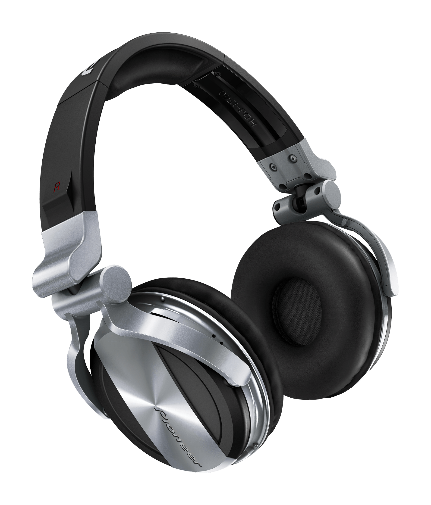

De construcción robusta y ligera, los HDJ-1500 están diseñados para soportar los rigores del uso profesional frecuente. Sus componentes de alta calidad, garantizan un sonido equilibrado en todas las frecuencias, mientras que su exclusiva cámara aislante elimina el ruido exterior para que puedas controlar fácilmente el ritmo en lugares ruidosos.
Además, las almohadillas de espuma de uretano con memoria se adaptan perfectamente a los oídos para garantizar el máximo confort en sets de larga duración.
PRECIO: $3,850.00